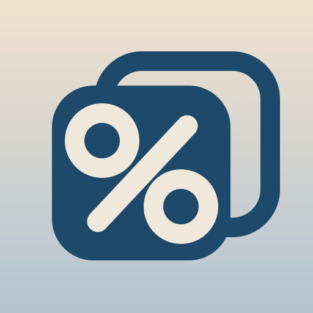

Shiogram調味料の塩分を計算して記録
アップデート
1作る調味料
マイ調味料とは
いつも使う配合を登録すると、上の一覧の先頭に★付きで常時表示されます。同じ名前で登録し直すと配合を上書き（編集）。消したいときは「整理」から。
2目標の塩分
%
3入れる原料
塩はここに入れません。原料と重さを入れると下部に塩の量が出ます。
煮た・蒸した原料は火入れ後・塩と混ぜる直前の重さで実測
詳しい使い方（生の大豆で量りたい・醤油だけで作りたい）
生の大豆しか量れないとき：原料名を「大豆」「蒸し大豆」「煮大豆」と書くと、行の下に生⇄火入れ後の換算の目安が自動で出ます（蒸し＝約2.0〜2.4倍、煮＝約2.2〜2.5倍に増量）。
醤油麹・醤（ひしお）など塩を直接入れない調味料：「＋詳細」でその原料の塩分%を入力。目標の塩分を空欄にすると仕上がりの塩分%が分かり、原料の重さを空欄にすると目標塩分にするための必要量を逆算します。
醤油（もろみ）を仕込むとき：吸水・蒸し・製麹で重さが人によって変わるため、原料は生の大豆・小麦ではなく「醤油麹」1項目＝出麹後の実測重量で入れます（塩分が正確になる）。生原料をどれだけ用意するかは、行の下に出る目安（出麹後は生原料合計の約1.2〜1.4倍）で逆算できます。飽和食塩水は不要で、表示された塩と水をそのまま加えればOK。
原料名重さ塩分
＋ 詳細（醤油など、塩分を含む原料を使う場合）
4加える塩の量
— g
この量の塩を加えます
—仕上がり合計
—実際の塩分
—原料の合計
仕上がりを
g
に
量を入れて押すと、原料の重さをまとめて増減します（例：1500g→500g）
5仕込みの写真
撮った写真はこの端末に保存されます。保存は下の「保存する」ボタンから。
6保存した仕込みカード
まだ保存された仕込みはありません。